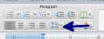

Formatting an APA Template
- In Font section change 'Font' to "Times New Roman"
- In Font section set 'Font Size' to "12"
- In Paragraph section set 'Line Spacing' to "2.0"

- In Paragraph section click 'Center Text' button
- Press Enter 5 - 6 times
- Type "Paper Title", press Enter
- Type your name, press Enter
- Type your university's name, press Enter
- Type your professor's name, press Enter
- Type "Month DD, YYYY", press Enter